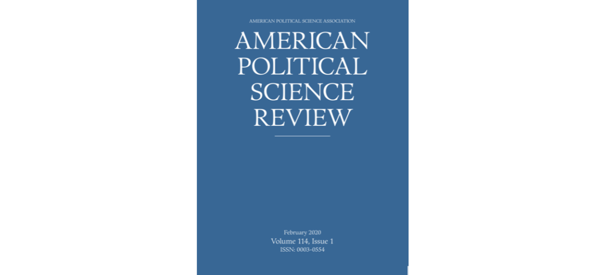

政观快递 | APSR, Vol.114, No.2（下）
原创 政文观止
政文观止Poliview
微信号 zhengwenguanzhi
功能介绍 从一群年轻人的视角出发，专业、专注、专解海内外比较政治经济研究的前沿佳作。
__发表于
期刊简介： 《美国政治学评论》（American Political Science Review, APSR）是美国政治学会（American Political Science Association, APSA）旗下最知名的季刊。自1906年创刊并由剑桥大学出版社出版以来，逐步成为政治学最具权威性的期刊之一。内容涉及政治学理论、美国政治、公共政策、公共管理、比较政治、国际关系等。
编者按： 摘要编译主要由各高校在读硕士生和博士生自愿组织进行。受学生学识及翻译水平所限，译文可能有诸多不当之处，还望读者们见宥，也欢迎留言讨论。此外，由于版权所限，需要阅读原文的读者请通过所在学校/机构的图书馆数据库或其他途径访问下载。
期刊目录
7. 用人际对话减少排他态度：来自三次田野实验的证据
8. 富裕美国人对社会地位和经济保守主义的渴求
9. 不平等的地理学：土地使用管制如何产生种族隔离？
10. 一人一票：评估美国大选中双重投票的盛行
11. 谁投票更具策略性？
12. 社会网络结构与公共物品供应的政治：来自菲律宾的证据
13. 早期民主的起源
14. 从伊斯兰主义者到穆斯林民主派：突尼斯复兴党的案例分析
15. 国家影响有限地区中的关系型国家建构：关于警察态度的实验证据
16. 贫民窟里的杀戮：里约热内卢的社会秩序、犯罪治理和警察暴力
17. 第三帝国的遗产：集中营和群体外的不宽容

用人际对话减少排他态度：
来自三次田野实验的证据
题目： Reducing Exclusionary Attitudes through Interpersonal Conversation: Evidence from Three Field Experiments
作者： Joshua L. Kalla，耶鲁大学政治学、统计与数据科学助理教授
David E. Broockman，加州大学伯克利分校政治学系副教授
摘要： 排他态度——对外部群体和对自身有利政策的反对者的偏见——正在向世界范围内的民主社会提出挑战。借助心理学的观点，本文认为人际间以非批判性交流叙述方式进行的对话可以持续地减少排他态度。本文用来自三个预注册的针对非法移民和变性人态度的田野实验支持了这一观点。在这些实验中，230名游说者与来自美国七个地区的6869名选民进行了对话。在实验1中，仅陈述观点的面对面对话对选民针对移民政策的态度或偏见没有影响，但相同的包含非评判性叙述的对话至少在四个月的时间里减少了排他态度(d=0.08)。以对变性人态度为对象的实验2和实验3印证了这些发现，并进一步支持了这种策略的可扩展性(ds=0.08, 0.04)。非评判性叙述能够帮助克服人们在讨论争议话题时常见的对说服的抵制。
Exclusionary attitudes—prejudice toward outgroups and opposition to policies that promote their well-being—are presenting challenges to democratic societies worldwide. Drawing on insights from psychology, we argue that non- judgmentally exchanging narratives in interpersonal conversations can facilitate durable reductions in exclusionary attitudes. We support this argument with evidence from three pre-registered field experiments targeting exclusionary attitudes toward unauthorized immigrants and transgender people. In these experiments, 230 canvassers conversed with 6,869 voters across 7 US locations. In Experiment 1, face-to-face conversations deploying arguments alone had no effects on voters’ exclusionary immigration policy or prejudicial attitudes, but otherwise identical conversations also including the non- judgmental exchange of narratives durably reduced exclusionary attitudes for at least four months (d = 0.08). Experiments 2 and 3, targeting transphobia, replicate these findings and support the scalability of this strategy (ds = 0.08, 0.04). Non-judgmentally exchanging narratives can help overcome the resistance to persuasion often encountered in discussions of these contentious topics.
富裕美国人对社会地位和经济保守主义的渴求
题目： The Desire for Social Status and Economic Conservatism among Affluent Americans
作者： Adam Thal，耶鲁大学博士后
摘要： 富裕的美国人在决策过程中有着更高比重的影响力，且经常运用其权力来推行加剧不平等的保守经济政策。作者表示，这种行为部分地由富裕美国人对社会地位的渴望所驱动。首先，作者利用新的调查尺度展示了富裕美国人对社会地位的渴望与他们的经济保守主义程度有着很强的相关性。其次，社交媒体语境下的实验证实了作者的结论。在如Facebook、Instagram和Twitter等网站，富裕的美国人通过秀出自己的上流的生活方式来争夺社会地位。当作者随机分配富裕的美国人去体验这种社会地位竞争时，会导致他们在经济上更加保守。这一结果有助于我们理解富裕美国人经济保守主义的社会心理根源，并首次证明了社交媒体鼓励加剧不平等的政治行为。
Affluent Americans have disproportionate influence over policymaking and often use their power to advance conservative economic policies that increase inequality. I show that this behavior is partially driven by affluent Americans’ desire for social status. First, I use a new survey scale to show that affluent Americans’ desire for social status strongly predicts their level of economic conservatism. Second, I test my theory experimentally in the context of social media. On sites like Facebook, Instagram, and Twitter, affluent Americans compete for social status by sharing curated versions of their lives that highlight their upper-class lifestyle. When I randomly assign affluent Americans to experience this status competition, it causes them to become more economically conservative. The results help us understand the social and psychological origins of economic conservatism among affluent Americans, and provide the first evidence that social media encourages political behaviors that are conducive to inequality.
不平等的地理学：
土地使用管制如何产生种族隔离？
题目： The Geography of Inequality: How Land Use Regulation Produces Segregation
作者： Jessica Trounstine，加利福尼亚大学默塞德分校董事会主席兼政治学教授
摘要： 在美国，公共产品主要由地方政府资助和供给。地方公共产品是有价值的，但它们的生产需要克服几个集体行动的问题，包括协调供应和尽量减少供给不畅、搭便车和同群效应。由地方政府颁布的土地使用管制允许社区解决在提供地方公共物品和维护房产价值时所固有的集体行动问题。这些努力的结果是在城市之间形成了以种族为界限的居住隔离。作者提供的证据表明，更严格的土地使用管制得到了白人社区的支持并保持了种族的同质性。首先，作者展示了在1970年比自身的大都市区更白人化的城市在2006年更有可能实行限制性的土地使用模式。然后，依靠《联邦公平住房法》所提出的导致土地使用政策发生变化的诉讼，作者证明了限制性的土地使用有助于解释长期以来大都市的区域隔离模式。最后，作者引用了几个来自加州城市的、基于选区的倡议选举，表明白人社区更支持限制开发。这些结果强烈地表明，即使表面上种族中立的土地使用政策也导致了种族隔离。
Public goods in the United States are largely funded and delivered at the local level. Local public goods are valuable, but their production requires overcoming several collective action problems including coordinating supply and minimizing congestion, free-riding, and peer effects. Land use regulations, promulgated by local governments, allow communities to solve the collective action problems inherent in the provision of local public goods and maintenance of property values. A consequence of these efforts is residential segregation between cities along racial lines. I provide evidence that more stringent land use regulations are supported by whiter communities and that they preserve racial homogeneity. First, I show that cities that were whiter than their metropolitan area in 1970 are more likely to have restrictive land use patterns in 2006. Then, relying on Federal Fair Housing Act lawsuits to generate changes in land use policy, I show that restrictive land use helps to explain metropolitan area segregation patterns over time. Finally, I draw on precinct level initiative elections from several California cities to show that whiter neighborhoods are more supportive of restricting development. These results strongly suggest that even facially race-neutral land use policies have contributed to racial segregation.
一人一票：
评估美国大选中双重投票的盛行
题目： One Person, One Vote: Estimating the Prevalence of Double Voting in U.S. Presidential Elections
作者： Sharad Goel,斯坦福大学管理科学与工程系助理教授, Marc Meredith, 宾夕法尼亚大学政治学系副教授，Michael Morse, 圣迭戈大学政治学系博士；David M Rothschild, 微软研究所研究员；Houshmand Shirani- Mehr，斯坦福大学管理科学与工程系博士研究生
摘要： 关于选举舞弊事件的认识能影响人们如何去看待选举公正与投票便利的权衡。为了更好地了解双重投票事件的信息，本文开发并应用了一种评估有多少人在2012年总统选举中投票两次的方法。尽管审核表明，由于电子投票记录的错误真实的双重投票率可能更低，本文估计有1/4000的选民投过两次票。本文用州共享社保号码的子集数据来佐证并扩展本文的分析，使其更容易量化那些双重投票的选民。通过对这些州子集数据的分析，本文发现了一个减少双重投票的策略——删除那些和之前相同姓名和出生提起的注册记录。但这一方法每阻止一次双重投票就要消除大约300次合法投票。
Beliefs about the incidence of voter fraud inform how people view the trade- off between electoral integrity and voter accessibility. To better inform such beliefs about the rate of double voting, we develop and apply a method to estimate how many people voted twice in the 2012 presidential election. We estimate that about one in 4,000 voters cast two ballots, although an audit suggests that the true rate may be lower due to small errors in electronic vote records. We corroborate our estimates and extend our analysis using data from a subset of states that share social security numbers, making it easier to quantify who may have voted twice. For this subset of states, we find that one suggested strategy to reduce double voting—removing the registration with an earlier registration date when two share the same name and birthdate—could impede approximately 300 legitimate votes for each double vote prevented.
谁投票更具策略性？
题目： Who Votes More Strategically?
作者： Andrew C. Eggers，牛津大学纳菲尔德学院政治与国际关系系教授；Nick Vivyan，杜伦大学政府与国际事务系教授。
摘要： 策略性投票是对政治聚合现象的重要解释，但我们对于不同类型选民的策略性投票差异知之甚少。富裕选民在投票时会比贫穷选民更加策略性吗？策略性投票行为会因年龄、教育程度、性别或政治倾向而有所不同吗？这些答案对于评估一个选举制度在多大程度上代表社会中的不同偏好可能至关重要。本文介绍了一种测量和比较选民中策略性投票的新方法，在拥有适当调查数据的基础上，可以广泛应用这种方法。在近期的英国选举中，作者发现年长选民比年轻选民的投票更具策略性，富裕选民的投票比贫穷选民的投票更具策略性，而策略性投票行为在教育水平上变化不大。年龄和收入的策略性投票差异要小于年龄和收入的投票率差异，但这些因素会加剧政治学中众所周知的政治参与的不平等现象。
Strategic voting is an important explanation for aggregate political phenomena, but we know little about how strategic voting varies across types of voters. Are richer voters more strategic than poorer voters? Does strategic behavior vary with age, education, gender, or political leaning? The answers may be important for assessing how well an electoral system represents different preferences in society. We introduce a new approach to measuring and comparing strategic voting across voters that can be broadly applied, given appropriate survey data. In recent British elections, we find that older voters vote more strategically than younger voters and that richer voters vote more strategically than poorer voters, even as strategic behavior varies little across the education level. The differences in strategic voting by age and income are smaller than observed differences in turnout by age and income, but they tend to exacerbate these better-known inequalities in political participation.
社会网络结构与公共物品供应的政治：
来自菲律宾的证据
题目： Social Network Structures and the Politics of Public Goods Provision: Evidence from the Philippines
作者： Cesi Cruz，英属哥伦比亚大学温哥华（Vancouver）经济学院和政治学系助理教授；Julien Labonne，牛津大学布拉瓦尼克（Blavatnik）政府学院副教授；Pablo Querub´ın，纽约大学威尔夫家族（Wilf Family）政治学系副教授
摘要： 本文研究了社会结构和政治激励两者之间的关系对公共产品的影响。本文指出，当政客而非社区对公共物品的提供负有责任时，社会的碎片化可能会降低精英被俘获的危险，并且增强公共产品的提供和选举竞争。本文通过对菲律宾15000个村庄中超过2000万个个体组成的家族网络的大数据进行分析。本文充分利用了命名传统来测量家族之间的通婚状况，并使用社区检测算法来识别这些村庄中的相关宗族。本文显示社会网络越碎片化，村庄就越会提供更多的公共物品，产生更多的政治竞争，在控制了村庄的许多特征和替换测算方法后，这一结论依然是稳健的。
We study the relationship between social structure and political incentives for public goods provision. We argue that when politicians—rather than communities—are responsible for the provision of public goods, social fractionalization may decrease the risk of elite capture and lead to increased public goods provision and electoral competition. We test this using large- scale data on family networks from over 20 million individuals in 15,000 villages of the Philippines. We take advantage of naming conventions to assess intermarriage links between families and use community detection algorithms to identify the relevant clans in those villages. We show that there is more public goods provision and political competition in villages with more fragmented social networks, a result that is robust to controlling for a large number of village characteristics and to alternative estimation techniques.
早期民主的起源
题目： Origins of Early Democracy
作者： Ali T. Ahmed，纽约大学政治系博士候选人；David Stasavage，纽约大学政治系教授
摘要： 统治者在制定政策前必须寻求同意的思想是民主的关键。作者认为，这种实践在大部分人类社会中独立地逐步发展，在这些社会中行政首脑与咨议机关进行共同统治。作者认为，当信息不对称使得统治者难以获取税收收入时，咨议机关的管理更有可能出现，作者用一个理论模型来说明这一论点。让人民在管理中发挥作用成为克服信息问题的一种手段。作者通过考察标准跨文化样本中农业适宜性的局部变化与委员会管理之间的相关性来检验这一假设。更进一步，作者建议，面对严重信息不对称的行政首脑也可以有一个替代的途径来获取资源——发展一个官僚机构来衡量生产力的变化。进一步的实证结果表明，通过官僚进行统治可以替代与咨议机关的共同统治。
The idea that rulers must seek consent before making policy is key to democracy. We suggest that this practice evolved independently in a large fraction of human societies where executives ruled jointly with councils. We argue that council governance was more likely to emerge when information asymmetries made it harder for rulers to extract revenue, and we illustrate this with a theoretical model. Giving the population a role in governance became one means of overcoming the information problem. We test this hypothesis by examining the correlation between localized variation in agricultural suitability and the presence of council governance in the Standard Cross Cultural Sample. As a further step, we suggest that executives facing substantial information asymmetries could also have an alternative route for resource extraction—develop a bureaucracy to measure variation in productivity. Further empirical results suggest that rule by bureaucracy could substitute for shared rule with a council.
从伊斯兰主义者到穆斯林民主派：
突尼斯复兴党的案例分析
题目： From Islamists to Muslim Democrats: The Case of Tunisia’s Ennahda
作者： Sharan Grewal，威廉玛丽学院政府系助理教授
摘要： 什么促使一些伊斯兰主义者变成民主派穆斯林，让他们不再那么重视宗教并接受世俗的民主价值？本文假定意识形态变革的渠道就是向世俗民主国家的移民。通过对突尼斯伊斯兰运动复兴党(Ennahda)的意识形态分析，本文发现那些在世俗民主国家生活过的议员比那些只在突尼斯生活过的议员有更多的自由派投票记录。特别是，他们更可能去捍卫良心自由并反对将伊斯兰教法载入宪法。同其中几位议员的访谈表明，他们也意识到国外的生活经历对其意识形态的因果效应，并为导致这种影响的三种机制提供了支持：即社会化、群体间接触和政治学习。
What drives some Islamists to become “Muslim Democrats,” downplaying religion and accepting secular democracy? This article hypothesizes that one channel of ideological change is migration to secular democracies. Drawing on an ideal point analysis of parliamentary votes from the Tunisian Islamist movement Ennahda, I find that MPs who had lived in secular democracies held more liberal voting records than their counterparts who had lived only in Tunisia. In particular, they were more likely to defend freedom of conscience and to vote against enshrining Islamic law in the constitution. Interviews with several of these MPs demonstrate that they recognize a causal effect of their experiences abroad on their ideologies, and provide support for three distinct mechanisms by which this effect may have occurred: socialization, intergroup contact, and political learning.
国家影响有限地区中的关系型国家建构：
关于警察态度的实验证据
题目： Relational State Building in Areas of Limited Statehood: Experimental Evidence on the Attitudes of the Police
作者： Sabrina Karim, 康奈尔大学政府学系助理教授
摘要： 在何种条件下，国家向其影响有限的地区的扩张会改善对国家权威的感知？尽管现有研究强调国家合法性认同或制度性因素，作者认为国家代理人和公民之间的关系促使积极的态度形成，因为这些关系提供了信息且促进了社会关系。此外，当国家代理人和公民拥有相同的人口特征时，感知效应可能会提高。最后，认为国家代理人和公民之间程序互动不公平的公民可能会对国家持负面态度。通过随机对利比里亚农村地区的男性和女性警察进行家庭访问，作者测试了这三种观点。这些访问有助于建立关系，改善对警察的看法；而警察与公民之间共同的人口学特征并没有强化这一效应。随机访问中的不公平感知导致了对警察的负面观点。这些结果意味着国家代理人和公民之间的关系建构是国家建构的重要部分。
Under what conditions does state expansion into limited statehood areas improve perceptions of state authority? Although previous work emphasizes identity or institutional sources of state legitimacy, I argue that relationships between state agents and citizens drive positive attitude formation, because these relationships provide information and facilitate social bonds. Moreover, when state agents and citizens share demographic characteristics, perceptional effects may improve. Finally, citizens finding procedural interactions between state agents and citizens unfair may adopt negative views about the state. I test these three propositions by randomizing household visits by male or female police officers in rural Liberia. These visits facilitated relationship building, leading to improved perceptions of police; shared demographic characteristics between police and citizens did not strengthen this effect. Perceptions of unfairness in the randomization led to negative opinions about police. The results imply that relationship building between state agents and citizens is an important part of state building.
贫民窟里的杀戮：
里约热内卢的社会秩序、犯罪治理和警察暴力
题目： Killing in the Slums: Social Order, Criminal Governance, and Police Violence in Rio de Janeiro
作者： Beatriz Magaloni，斯坦福大学政治学系教授；Edgar Franco-Vivanco，密歇根大学博士后研究员；Vanessa Melo，加州大学洛杉矶分校人类学系研究生。
摘要： 国家对有组织犯罪集团的干预有时能够改善安全，但是通常会加剧暴力。为了理解其原因，本文提供了一个关于五种犯罪形态的犯罪治理理论——暴动型、强盗型、共生型、掠夺型和分裂型。这些犯罪形态根据犯罪集团是否与国家行为者对抗或勾结，伤害社区或与社区合作，与对立的有组织犯罪集团垄断或争夺地盘来划分。警察对这些犯罪形态的干预会带来不同挑战，并与完全不同的地方安全效果相关联。利用一个多方法研究设计，结合准实验统计分析、自动文本分析、广泛的定性研究和以里约热内卢“镇暴警察单位”——他们试图从犯罪组织手中夺回对贫民窟的控制权——为背景的大样本调查，作者为这一理论提供了证据。
State interventions against organized criminal groups (OCGs) sometimes work to improve security, but often exacerbate violence. To understand why, this article offers a theory about criminal governance in five types of criminal regimes—Insurgent, Bandit, Symbiotic, Predatory, and Split. These differ according to whether criminal groups confront or collude with state actors, abuse or cooperate with the community, and hold a monopoly or contest territory with rival OCGs. Police interventions in these criminal regimes pose different challenges and are associated with markedly different local security outcomes. We provide evidence of this theory by using a multimethod research design combining quasi-experimental statistical analyses, automated text analysis, extensive qualitative research, and a large-N survey in the context of Rio de Janeiro’s “Pacifying Police Units” (UPPs), which sought to reclaim control of the favelas from criminal organizations.
第三帝国的遗产：
集中营和群体外的不宽容
题目： Legacies of the Third Reich: Concentration Camps and Out-group Intolerance
作者： Jonathan Homola，莱斯大学政治学系助理教授；Miguel M. Pereira，圣路易斯华盛顿大学博士候选人；Margit Tavits，圣路易斯华盛顿大学教授
摘要： 本文检视了第三帝国的长期政治遗产，展示了当代政治不宽容、排外主义以及为极端右翼政党投票的行为都与纳粹德国建立的集中营密切相关。当代民众的态度、集中营的位置、地区划分、集中营对经济的冲击或者其当下的用途并不能解释这一关系。本文认为这种认知失调导致了那些受纳粹制度影响更为直接的民众对政权体制保有信心。不仅如此，这种态度还会随着代际传递下去。本文提供的这一证据有助于我们理解历史制度的遗产以及政治不宽容的来源。
We explore the long-term political consequences of the Third Reich and show that current political intolerance, xenophobia, and voting for radical right- wing parties are associated with proximity to former Nazi concentration camps in Germany. This relationship is not explained by contemporary attitudes, the location of the camps, geographic sorting, the economic impact of the camps, or their current use. We argue that cognitive dissonance led those more directly exposed to Nazi institutions to conform with the belief system of the regime. These attitudes were then transmitted across generations. The evidence provided here contributes both to our understanding of the legacies of historical institutions and the sources of political intolerance.
编译/校对：施榕、杨端程、康张城、殷昊、赵德昊、吴温泉
编辑：郭静远
【政文观止Poliview】系头条号签约作者